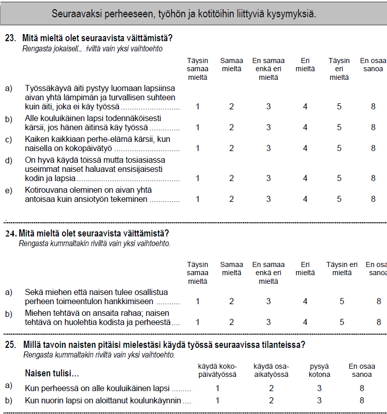
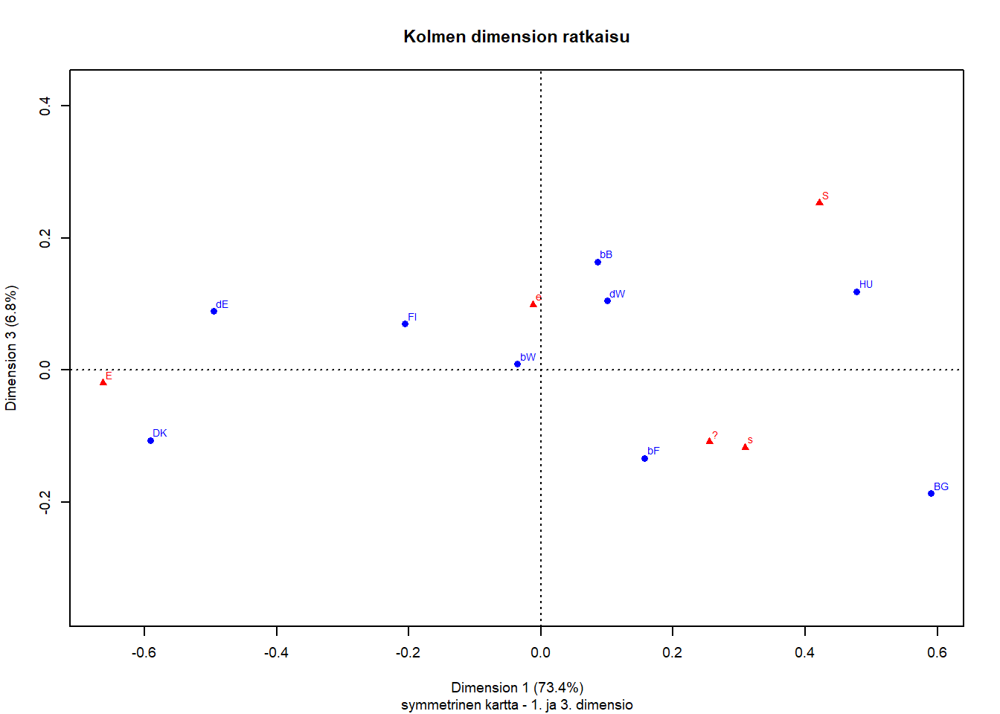
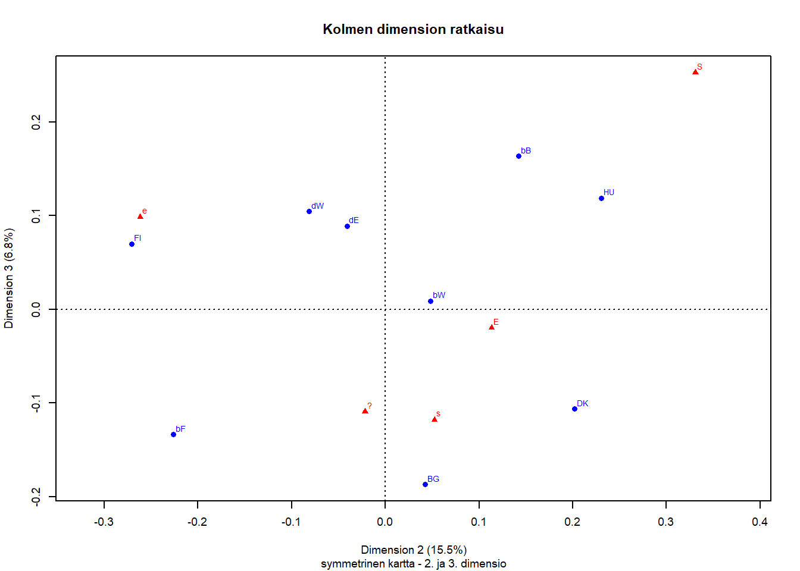
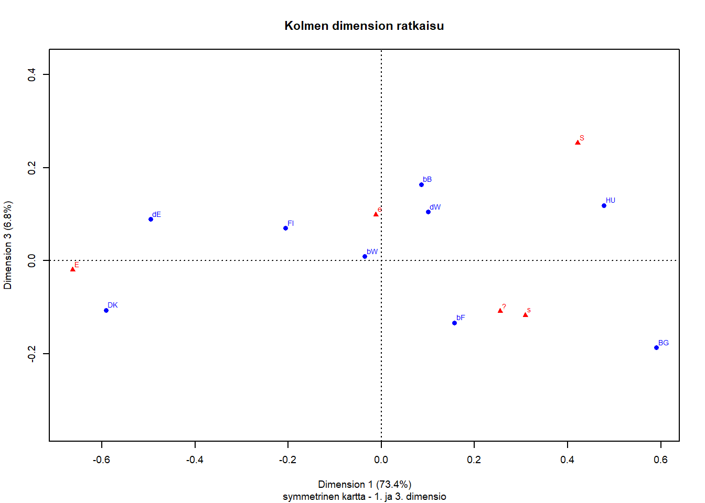
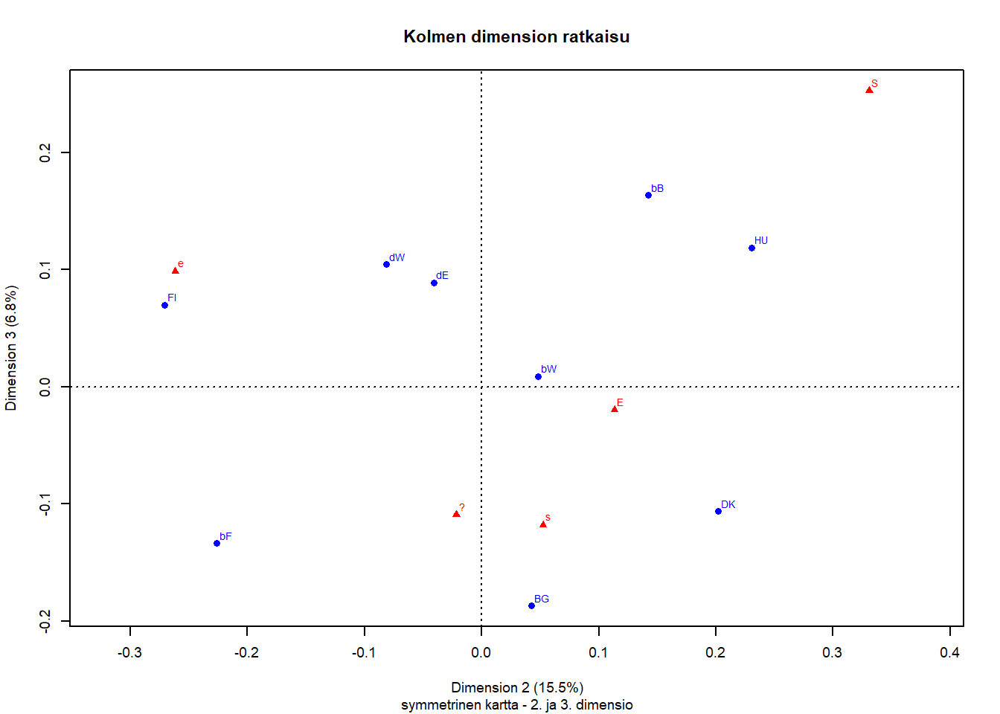

Liitteet
7.3 Korrespondenssianalyysin teoriaa
7.4 Suomenkielinen lomake (esimerkki)
Tämä kuva on myös tekstissä, kätevä tapa esittää siististi kysymysten pitkät versiot.

Kuva 7.1: Esimerkki suomenkielisestä lomakkeesta
7.5 R - koodi
## tweaking rgl## tibble [32,823 x 23] (S3: tbl_df/tbl/data.frame)
## $ V1 : dbl+lbl [1:32823] 5900, 5900, 5900, 5900, 5900, 5900, 5900, 5900, 5900...
## ..@ label : chr "GESIS Data Archive Study Number"
## ..@ format.spss: chr "F4.0"
## ..@ labels : Named num 5900
## .. ..- attr(*, "names")= chr "GESIS Data Archive Study Number ZA5900"
## $ V2 : chr [1:32823] "4.0.0 (2016-11-23)" "4.0.0 (2016-11-23)" "4.0.0 (2016-11-23)" "4.0.0 (2016-11-23)" ...
## ..- attr(*, "label")= chr "GESIS Archive Version"
## ..- attr(*, "format.spss")= chr "A25"
## ..- attr(*, "display_width")= int 26
## $ DOI : chr [1:32823] "doi:10.4232/1.12661" "doi:10.4232/1.12661" "doi:10.4232/1.12661" "doi:10.4232/1.12661" ...
## ..- attr(*, "label")= chr "Digital Object Identifier"
## ..- attr(*, "format.spss")= chr "A50"
## ..- attr(*, "display_width")= int 26
## $ V3 : dbl+lbl [1:32823] 36, 36, 36, 36, 36, 36, 36, 36, 36, 36, 36, 36, 36, ...
## ..@ label : chr "Country/ Sample ISO 3166 Code (see V4 for codes for whole nation states)"
## ..@ format.spss: chr "F5.0"
## ..@ labels : Named num [1:45] 32 36 40 100 124 152 156 158 191 203 ...
## .. ..- attr(*, "names")= chr [1:45] "AR-Argentina" "AU-Australia" "AT-Austria" "BG-Bulgaria" ...
## $ V4 : dbl+lbl [1:32823] 36, 36, 36, 36, 36, 36, 36, 36, 36, 36, 36, 36, 36, ...
## ..@ label : chr "Country ISO 3166 Code (see V3 for codes for the sample)"
## ..@ format.spss: chr "F3.0"
## ..@ labels : Named num [1:41] 32 36 40 56 100 124 152 156 158 191 ...
## .. ..- attr(*, "names")= chr [1:41] "AR-Argentina" "AU-Australia" "AT-Austria" "BE-Belgium" ...
## $ C_ALPHAN: chr [1:32823] "AU" "AU" "AU" "AU" ...
## ..- attr(*, "label")= chr "Country Prefix ISO 3166 Code - alphanumeric"
## ..- attr(*, "format.spss")= chr "A20"
## ..- attr(*, "display_width")= int 22
## $ V5 : dbl+lbl [1:32823] 5, 1, 2, 2, 1, NA, 2, 4, 2, 2, 4, 2, 2, ...
## ..@ label : chr "Q1a Working mom: warm relationship with children as a not working mom"
## ..@ format.spss: chr "F1.0"
## ..@ labels : Named num [1:8] 0 1 2 3 4 5 8 9
## .. ..- attr(*, "names")= chr [1:8] "NAP: ES" "Strongly agree" "Agree" "Neither agree nor disagree" ...
## $ V6 : dbl+lbl [1:32823] 1, 5, 4, 4, 4, NA, 4, 3, 4, 3, 3, 5, 4, ...
## ..@ label : chr "Q1b Working mom: Preschool child is likely to suffer"
## ..@ format.spss: chr "F1.0"
## ..@ labels : Named num [1:8] 0 1 2 3 4 5 8 9
## .. ..- attr(*, "names")= chr [1:8] "NAP: ES" "Strongly agree" "Agree" "Neither agree nor disagree" ...
## $ V7 : dbl+lbl [1:32823] 3, 5, 2, 4, 4, NA, 4, 2, 4, 2, 2, 3, 4, ...
## ..@ label : chr "Q1c Working woman: Family life suffers when woman has full-time job"
## ..@ format.spss: chr "F1.0"
## ..@ labels : Named num [1:8] 0 1 2 3 4 5 8 9
## .. ..- attr(*, "names")= chr [1:8] "NAP: ES" "Strongly agree" "Agree" "Neither agree nor disagree" ...
## $ V8 : dbl+lbl [1:32823] 3, 5, 5, 2, 4, NA, 4, 5, 4, 5, 3, 4, 4, ...
## ..@ label : chr "Q1d Working woman: What women really want is home and kids"
## ..@ format.spss: chr "F1.0"
## ..@ labels : Named num [1:8] 0 1 2 3 4 5 8 9
## .. ..- attr(*, "names")= chr [1:8] "NAP: ES" "Strongly agree" "Agree" "Neither agree nor disagree" ...
## $ V9 : dbl+lbl [1:32823] 3, 1, 2, 3, 4, NA, 2, 4, 4, 1, 4, 2, 2, ...
## ..@ label : chr "Q1e Working woman: Being housewife is as fulfilling as working for pay"
## ..@ format.spss: chr "F1.0"
## ..@ labels : Named num [1:8] 0 1 2 3 4 5 8 9
## .. ..- attr(*, "names")= chr [1:8] "NAP: ES" "Strongly agree" "Agree" "Neither agree nor disagree" ...
## $ V10 : dbl+lbl [1:32823] 1, 3, 4, 2, 2, NA, 2, 5, 2, 1, 2, 2, 2, ...
## ..@ label : chr "Q2a Both should contribute to household income"
## ..@ format.spss: chr "F1.0"
## ..@ labels : Named num [1:8] 0 1 2 3 4 5 8 9
## .. ..- attr(*, "names")= chr [1:8] "NAP: ES" "Strongly agree" "Agree" "Neither agree nor disagree" ...
## $ V11 : dbl+lbl [1:32823] 3, 5, 4, 4, 4, NA, 2, 5, 4, 1, 4, 4, 4, ...
## ..@ label : chr "Q2b Men's job earn money, women's job look after home"
## ..@ format.spss: chr "F1.0"
## ..@ labels : Named num [1:8] 0 1 2 3 4 5 8 9
## .. ..- attr(*, "names")= chr [1:8] "NAP: ES" "Strongly agree" "Agree" "Neither agree nor disagree" ...
## $ V12 : dbl+lbl [1:32823] 3, NA, NA, 2, 2, NA, 2, NA, 2, 2, 3, 2, NA, ...
## ..@ label : chr "Q3a Should women work: Child under school age"
## ..@ format.spss: chr "F1.0"
## ..@ labels : Named num [1:6] 1 2 3 6 8 9
## .. ..- attr(*, "names")= chr [1:6] "Work full-time" "Work part-time" "Stay at home" "TW: women should decide" ...
## $ V13 : dbl+lbl [1:32823] 2, NA, 2, 1, 2, NA, 2, NA, 2, 2, 2, 2, NA, ...
## ..@ label : chr "Q3b Should women work: Youngest kid at school"
## ..@ format.spss: chr "F1.0"
## ..@ labels : Named num [1:6] 1 2 3 6 8 9
## .. ..- attr(*, "names")= chr [1:6] "Work full-time" "Work part-time" "Stay at home" "TW: women should decide" ...
## $ SEX : dbl+lbl [1:32823] 1, 2, 2, 2, 2, 1, 2, 1, 2, 2, 1, 1, 2, 2, 1, 1, 2, 2...
## ..@ label : chr "Sex of Respondent"
## ..@ format.spss: chr "F1.0"
## ..@ labels : Named num [1:3] 1 2 9
## .. ..- attr(*, "names")= chr [1:3] "Male" "Female" "No answer"
## $ AGE : dbl+lbl [1:32823] 58, 59, 40, 20, 72, 68, 64, 57, 45, 71, 19, 41, 68, ...
## ..@ label : chr "Age of respondent"
## ..@ format.spss: chr "F3.0"
## ..@ labels : Named num [1:6] 15 16 17 18 102 999
## .. ..- attr(*, "names")= chr [1:6] "15 years" "16 years" "17 years" "18 years" ...
## $ DEGREE : dbl+lbl [1:32823] 2, 5, 5, 3, 2, NA, NA, 6, 5, 6, 3, 5, 2, ...
## ..@ label : chr "Highest completed degree of education: Categories for international comparison"
## ..@ format.spss: chr "F1.0"
## ..@ labels : Named num [1:8] 0 1 2 3 4 5 6 9
## .. ..- attr(*, "names")= chr [1:8] "No formal education" "Primary school (elementary school)" "Lower secondary (secondary completed does not allow entry to university: obligatory school)" "Upper secondary (programs that allows entry to university" ...
## $ MAINSTAT: dbl+lbl [1:32823] 6, 6, 3, 1, 6, 5, 6, 2, 1, 5, 3, 1, 6, 1, 1, 6, 6, 1...
## ..@ label : chr "Main status"
## ..@ format.spss: chr "F2.0"
## ..@ labels : Named num [1:10] 1 2 3 4 5 6 7 8 9 99
## .. ..- attr(*, "names")= chr [1:10] "In paid work" "Unemployed and looking for a job, HR: incl never had a job" "In education" "Apprentice or trainee" ...
## $ TOPBOT : dbl+lbl [1:32823] 3, 7, 8, NA, 7, 2, 7, NA, 10, 6, 4, 5, NA, ...
## ..@ label : chr "Top-Bottom self-placement"
## ..@ format.spss: chr "F2.0"
## ..@ labels : Named num [1:14] 0 1 2 3 4 5 6 7 8 9 ...
## .. ..- attr(*, "names")= chr [1:14] "Not available: GB,US" "Lowest, Bottom, 01" "02" "03" ...
## $ HHCHILDR: dbl+lbl [1:32823] NA, NA, 3, 1, 0, NA, 0, 0, 1, NA, 0, 2, 0, ...
## ..@ label : chr "How many children in household: children between [school age] and 17 years of age"
## ..@ format.spss: chr "F2.0"
## ..@ labels : Named num [1:7] 0 1 2 21 96 97 99
## .. ..- attr(*, "names")= chr [1:7] "No children" "One child" "2 children" "21 children" ...
## $ MARITAL : dbl+lbl [1:32823] 6, 1, 1, 6, 1, 6, 1, 1, 1, NA, 6, 1, 1, ...
## ..@ label : chr "Legal partnership status"
## ..@ format.spss: chr "F1.0"
## ..@ labels : Named num [1:9] 1 2 3 4 5 6 7 8 9
## .. ..- attr(*, "names")= chr [1:9] "Married" "Civil partnership" "Separated from spouse/ civil partner (still legally married/ still legally in a civil partnership)" "Divorced from spouse/ legally separated from civil partner" ...
## $ URBRURAL: dbl+lbl [1:32823] 1, 1, 1, NA, 1, 2, NA, 2, 2, NA, 2, 2, 3, ...
## ..@ label : chr "Place of living: urban - rural"
## ..@ format.spss: chr "F1.0"
## ..@ labels : Named num [1:7] 1 2 3 4 5 7 9
## .. ..- attr(*, "names")= chr [1:7] "A big city" "The suburbs or outskirts of a big city" "A town or a small city" "A country village" ...
## - attr(*, "notes")= chr [1:45] "document Plan File: /Users/marcic/Desktop/old/GPS2011 sampling/ISSP2013.sampling" " .csplan" " Weight Variable: SampleWeight_Final_" " Stage 1" ...## $label
## [1] "Age of respondent"
##
## $format.spss
## [1] "F3.0"
##
## $labels
## 15 years 16 years 17 years 18 years 102 years No answer
## 15 16 17 18 102 999
##
## $class
## [1] "haven_labelled" "vctrs_vctr" "double"| Min. | 1st Qu. | Median | Mean | 3rd Qu. | Max. |
|---|---|---|---|---|---|
| 15 | 36 | 50 | 49.51607 | 63 | 102 |
## N = 32823
## Note: pearson correlation (p-value).
|
## [1] TRUE## [1] TRUE## [1] TRUE## [1] TRUE## [1] TRUE## [1] TRUE## [1] TRUE## [1] TRUE## [1] TRUE## [1] TRUE## [1] TRUE## [1] TRUE## [1] TRUE## [1] TRUE## [1] TRUE## [1] TRUE## [1] TRUE## [1] TRUE## [1] TRUE## [1] TRUE## [1] TRUE## [1] TRUE## [1] TRUE## [1] TRUE## [1] TRUE## [1] TRUE## [1] TRUE## [1] TRUE## [1] TRUE## [1] TRUE## [1] TRUE## [1] TRUE## [1] TRUE## [1] TRUE## [1] TRUE## [1] TRUE## [1] TRUE## [1] TRUE## [1] TRUE## [1] TRUE## [1] TRUE## [1] TRUE## [1] TRUE## [1] TRUE## [1] TRUE## [1] TRUE## [1] TRUE## [1] TRUE| muuttuja | kysymyksen tunnus, lyhennetty kysymys |
|---|---|
| V5 | Q1a Working mother can have warm relation with child |
| V6 | Q1b Pre-school child suffers through working mother |
| V7 | Q1c Family life suffers through working mother |
| V8 | Q1d Women’s preference: home and children |
| V9 | Q1e Being housewife is satisfying |
| V10 | Q2a Both should contribute to household income |
| V11 | Q2b Men’s job is earn money, women’s job household |
| V12 | Q3a Should women work: Child under school age |
| V13 | Q3b Should women work: Youngest kid at school |
| SEX | Respondents age |
| AGE | Respondents gender |
| DEGREE | Highest completed degree of education: Categories for international comparison |
| MAINSTAT | Main status: work, unemployed, in education… |
| TOPBOT | Top-Bottom self-placement (10 pt scale) |
| HHCHILDR | How many children in household: children between [school age] and 17 years of age |
| MARITAL | Legal partnership status: married, civil partership… |
| URBRURAL | Place of living: urban - rural |
## tibble [8,542 x 7] (S3: tbl_df/tbl/data.frame)
## $ C_ALPHAN: chr [1:8542] "BG" "BG" "BG" "BG" ...
## ..- attr(*, "label")= chr "Country Prefix ISO 3166 Code - alphanumeric"
## ..- attr(*, "format.spss")= chr "A20"
## ..- attr(*, "display_width")= int 22
## $ V3 : dbl+lbl [1:8542] 100, 100, 100, 100, 100, 100, 100, 100, 100, 100, 100...
## ..@ label : chr "Country/ Sample ISO 3166 Code (see V4 for codes for whole nation states)"
## ..@ format.spss: chr "F5.0"
## ..@ labels : Named num [1:45] 32 36 40 100 124 152 156 158 191 203 ...
## .. ..- attr(*, "names")= chr [1:45] "AR-Argentina" "AU-Australia" "AT-Austria" "BG-Bulgaria" ...
## $ maa : Factor w/ 25 levels "AU","AT","BG",..: 3 3 3 3 3 3 3 3 3 3 ...
## ..- attr(*, "label")= chr "Country Prefix ISO 3166 Code - alphanumeric"
## $ maa3 : Factor w/ 29 levels "AU-Australia",..: 3 3 3 3 3 3 3 3 3 3 ...
## ..- attr(*, "label")= chr "Country/ Sample ISO 3166 Code (see V4 for codes for whole nation states)"
## $ Q1b : Factor w/ 5 levels "S","s","?","e",..: 3 2 3 4 3 3 4 3 2 3 ...
## ..- attr(*, "label")= chr "Q1b Working mom: Preschool child is likely to suffer"
## $ sp : Factor w/ 2 levels "m","f": 2 2 1 2 2 2 1 1 2 1 ...
## ..- attr(*, "label")= chr "Sex of Respondent"
## $ ika : dbl+lbl [1:8542] 64, 43, 63, 31, 52, 46, 51, 40, 57, 64, 41, 60, 21, 4...
## ..@ label : chr "Age of respondent"
## ..@ format.spss: chr "F3.0"
## ..@ labels : Named num [1:6] 15 16 17 18 102 999
## .. ..- attr(*, "names")= chr [1:6] "15 years" "16 years" "17 years" "18 years" ...
## - attr(*, "notes")= chr [1:45] "document Plan File: /Users/marcic/Desktop/old/GPS2011 sampling/ISSP2013.sampling" " .csplan" " Weight Variable: SampleWeight_Final_" " Stage 1" ...## [1] TRUE## [1] TRUE## [1] TRUE## [1] TRUE## [1] TRUE## [1] TRUE## [1] TRUE## [1] TRUE| S | s | ? | e | E | Total | |
|---|---|---|---|---|---|---|
| BE | 191 | 451 | 438 | 552 | 381 | 2013 |
| BG | 118 | 395 | 205 | 190 | 13 | 921 |
| DE | 165 | 375 | 198 | 538 | 438 | 1714 |
| DK | 70 | 238 | 152 | 232 | 696 | 1388 |
| FI | 47 | 188 | 149 | 423 | 303 | 1110 |
| HU | 219 | 288 | 225 | 190 | 75 | 997 |
| Total | 810 | 1935 | 1367 | 2125 | 1906 | 8143 |
| S | s | ? | e | E | Total | |
|---|---|---|---|---|---|---|
| BE | 9.49 | 22.40 | 21.76 | 27.42 | 18.93 | 100.00 |
| BG | 12.81 | 42.89 | 22.26 | 20.63 | 1.41 | 100.00 |
| DE | 9.63 | 21.88 | 11.55 | 31.39 | 25.55 | 100.00 |
| DK | 5.04 | 17.15 | 10.95 | 16.71 | 50.14 | 100.00 |
| FI | 4.23 | 16.94 | 13.42 | 38.11 | 27.30 | 100.00 |
| HU | 21.97 | 28.89 | 22.57 | 19.06 | 7.52 | 100.00 |
| All | 9.95 | 23.76 | 16.79 | 26.10 | 23.41 | 100.00 |
| S | s | ? | e | E | All | |
|---|---|---|---|---|---|---|
| BE | 23.58 | 23.31 | 32.04 | 25.98 | 19.99 | 24.72 |
| BG | 14.57 | 20.41 | 15.00 | 8.94 | 0.68 | 11.31 |
| DE | 20.37 | 19.38 | 14.48 | 25.32 | 22.98 | 21.05 |
| DK | 8.64 | 12.30 | 11.12 | 10.92 | 36.52 | 17.05 |
| FI | 5.80 | 9.72 | 10.90 | 19.91 | 15.90 | 13.63 |
| HU | 27.04 | 14.88 | 16.46 | 8.94 | 3.93 | 12.24 |
| Total | 100.00 | 100.00 | 100.00 | 100.00 | 100.00 | 100.00 |


| / | S | s | ? | e | E |
|---|---|---|---|---|---|
| BE | 191 | 451 | 438 | 552 | 381 |
| BG | 0 | 0 | 0 | 0 | 0 |
| DE | 165 | 375 | 198 | 538 | 438 |
| DK | 0 | 0 | 0 | 0 | 0 |
| FI | 0 | 0 | 0 | 0 | 0 |
| HU | 0 | 0 | 0 | 0 | 0 |
| S | s | ? | e | E | |
|---|---|---|---|---|---|
| bF | 51 | 241 | 262 | 312 | 146 |
| bW | 53 | 103 | 91 | 118 | 125 |
| bB | 87 | 107 | 85 | 122 | 110 |
| BG | 118 | 395 | 205 | 190 | 13 |
| dW | 133 | 313 | 138 | 375 | 208 |
| dE | 32 | 62 | 60 | 163 | 230 |
| DK | 70 | 238 | 152 | 232 | 696 |
| FI | 47 | 188 | 149 | 423 | 303 |
| HU | 219 | 288 | 225 | 190 | 75 |
| BE | 191 | 451 | 438 | 552 | 381 |
| DE | 165 | 375 | 198 | 538 | 438 |
| S | s | ? | e | E | Total | |
|---|---|---|---|---|---|---|
| bF | 5.04 | 23.81 | 25.89 | 30.83 | 14.43 | 100.00 |
| bW | 10.82 | 21.02 | 18.57 | 24.08 | 25.51 | 100.00 |
| bB | 17.03 | 20.94 | 16.63 | 23.87 | 21.53 | 100.00 |
| BG | 12.81 | 42.89 | 22.26 | 20.63 | 1.41 | 100.00 |
| dW | 11.40 | 26.82 | 11.83 | 32.13 | 17.82 | 100.00 |
| dE | 5.85 | 11.33 | 10.97 | 29.80 | 42.05 | 100.00 |
| DK | 5.04 | 17.15 | 10.95 | 16.71 | 50.14 | 100.00 |
| FI | 4.23 | 16.94 | 13.42 | 38.11 | 27.30 | 100.00 |
| HU | 21.97 | 28.89 | 22.57 | 19.06 | 7.52 | 100.00 |
| All | 9.95 | 23.76 | 16.79 | 26.10 | 23.41 | 100.00 |


##
## Principal inertias (eigenvalues):
## 1 2 3 4
## Value 0.154101 0.032489 0.014294 0.008944
## Percentage 73.44% 15.48% 6.81% 4.26%
##
##
## Rows:
## bF bW bB BG dW dE DK
## Mass 0.124279 0.060174 0.062753 0.113103 0.143313 0.067174 0.170453
## ChiDist 0.341469 0.096258 0.239034 0.630991 0.219094 0.505720 0.634063
## Inertia 0.014491 0.000558 0.003586 0.045032 0.006879 0.017180 0.068528
## Dim. 1 0.400065 -0.090631 0.216912 1.502458 0.254323 -1.262007 -1.506022
## Dim. 2 -1.254042 0.267998 0.789358 0.236498 -0.451124 -0.226595 1.121468
## FI HU BE (*) DE (*)
## Mass 0.136313 0.122436 NA NA
## ChiDist 0.347733 0.550404 0.157974 0.175013
## Inertia 0.016483 0.037091 NA NA
## Dim. 1 -0.525222 1.215462 0.234127 -0.229593
## Dim. 2 -1.500986 1.280342 -0.364834 -0.379468
##
##
## Columns:
## S s ? e E
## Mass 0.099472 0.237627 0.167874 0.260960 0.234066
## ChiDist 0.592824 0.354761 0.332288 0.280549 0.672594
## Inertia 0.034959 0.029907 0.018536 0.020540 0.105887
## Dim. 1 1.073310 0.787257 0.649789 -0.029859 -1.688108
## Dim. 2 1.835133 0.290929 -0.119934 -1.451548 0.629110##
## Principal inertias (eigenvalues):
##
## dim value % cum% scree plot
## 1 0.154101 73.4 73.4 ******************
## 2 0.032489 15.5 88.9 ****
## 3 0.014294 6.8 95.7 **
## 4 0.008944 4.3 100.0 *
## -------- -----
## Total: 0.209828 100.0
##
##
## Rows:
## name mass qlt inr k=1 cor ctr k=2 cor ctr
## 1 | bF | 124 650 69 | 157 212 20 | -226 438 195 |
## 2 | bW | 60 388 3 | -36 137 0 | 48 252 4 |
## 3 | bB | 63 481 17 | 85 127 3 | 142 354 39 |
## 4 | BG | 113 878 215 | 590 874 255 | 43 5 6 |
## 5 | dW | 143 345 33 | 100 208 9 | -81 138 29 |
## 6 | dE | 67 966 82 | -495 960 107 | -41 7 3 |
## 7 | DK | 170 971 327 | -591 869 387 | 202 102 214 |
## 8 | FI | 136 957 79 | -206 352 38 | -271 605 307 |
## 9 | HU | 122 927 177 | 477 751 181 | 231 176 201 |
## 10 | (*)BE | <NA> 512 <NA> | 92 338 <NA> | -66 173 <NA> |
## 11 | (*)DE | <NA> 418 <NA> | -90 265 <NA> | -68 153 <NA> |
##
## Columns:
## name mass qlt inr k=1 cor ctr k=2 cor ctr
## 1 | S | 99 816 167 | 421 505 115 | 331 311 335 |
## 2 | s | 238 781 143 | 309 759 147 | 52 22 20 |
## 3 | | 168 594 88 | 255 589 71 | -22 4 2 |
## 4 | e | 261 871 98 | -12 2 0 | -262 870 550 |
## 5 | E | 234 999 505 | -663 971 667 | 113 28 93 | 



##
## Principal inertias (eigenvalues):
##
## dim value % cum% scree plot
## 1 0.037448 87.0 87.0 **********************
## 2 0.003977 9.2 96.2 **
## 3 0.001041 2.4 98.6 *
## 4 0.000590 1.4 100.0
## -------- -----
## Total: 0.043055 100.0
##
##
## Rows:
## name mass qlt inr k=1 cor ctr k=2 cor ctr
## 1 | f1 | 60 990 36 | -125 614 25 | -98 376 145 |
## 2 | f2 | 83 997 163 | -289 983 185 | 35 14 25 |
## 3 | f3 | 91 984 47 | -146 958 52 | 24 26 13 |
## 4 | f4 | 101 1000 97 | -186 836 93 | 82 164 172 |
## 5 | f5 | 98 879 4 | -35 658 3 | 20 221 10 |
## 6 | f6 | 100 951 176 | 256 866 175 | 80 85 162 |
## 7 | m1 | 57 659 32 | 42 72 3 | -120 587 205 |
## 8 | m2 | 66 977 57 | -187 946 62 | -34 30 19 |
## 9 | m3 | 78 457 5 | -31 318 2 | -20 139 8 |
## 10 | m4 | 89 674 14 | 58 482 8 | -37 192 30 |
## 11 | m5 | 89 988 90 | 189 818 85 | -86 170 166 |
## 12 | m6 | 89 978 277 | 360 963 307 | 45 15 45 |
##
## Columns:
## name mass qlt inr k=1 cor ctr k=2 cor ctr
## 1 | S | 99 915 128 | 196 695 102 | 110 220 304 |
## 2 | s | 238 969 304 | 230 961 336 | 21 8 27 |
## 3 | | 168 777 46 | 62 330 17 | -73 447 223 |
## 4 | e | 261 897 58 | -68 473 32 | -64 424 268 |
## 5 | E | 234 997 464 | -286 962 513 | 55 35 177 |
##
## Principal inertias (eigenvalues):
##
## dim value % cum% scree plot
## 1 0.184895 70.3 70.3 ******************
## 2 0.038751 14.7 85.0 ****
## 3 0.024006 9.1 94.1 **
## 4 0.015502 5.9 100.0 *
## -------- -----
## Total: 0.263154 100.0
##
##
## Rows:
## name mass qlt inr k=1 cor ctr k=2 cor ctr
## 1 | BEf1 | 14 678 9 | -83 43 1 | -320 635 38 |
## 2 | BEf2 | 24 914 11 | -278 650 10 | -177 264 20 |
## 3 | BEf3 | 21 320 3 | -62 96 0 | -95 224 5 |
## 4 | BEf4 | 24 164 3 | -50 92 0 | -44 71 1 |
## 5 | BEf5 | 23 332 5 | 133 304 2 | -40 28 1 |
## 6 | BEf6 | 23 832 17 | 371 710 17 | 153 121 14 |
## 7 | BEm1 | 11 429 9 | 284 367 5 | -117 62 4 |
## 8 | BEm2 | 17 372 5 | -113 169 1 | -125 203 7 |
## 9 | BEm3 | 20 108 1 | 17 29 0 | -29 79 0 |
## 10 | BEm4 | 22 966 5 | 225 812 6 | -98 154 5 |
## 11 | BEm5 | 22 728 8 | 255 686 8 | -63 42 2 |
## 12 | BEm6 | 26 788 15 | 348 788 17 | -5 0 0 |
## 13 | BGf1 | 5 531 11 | 547 531 8 | -9 0 0 |
## 14 | BGf2 | 8 860 14 | 640 853 17 | 59 7 1 |
## 15 | BGf3 | 12 815 21 | 617 804 24 | 75 12 2 |
## 16 | BGf4 | 10 932 12 | 519 927 15 | -39 5 0 |
## 17 | BGf5 | 14 880 23 | 609 870 28 | 66 10 2 |
## 18 | BGf6 | 18 921 32 | 627 846 39 | 186 74 16 |
## 19 | BGm1 | 5 940 7 | 596 878 9 | 159 62 3 |
## 20 | BGm2 | 6 830 9 | 557 788 11 | -130 43 3 |
## 21 | BGm3 | 8 709 19 | 655 698 19 | 83 11 1 |
## 22 | BGm4 | 8 771 11 | 540 754 12 | -81 17 1 |
## 23 | BGm5 | 10 979 11 | 524 977 15 | 21 2 0 |
## 24 | BGm6 | 9 692 27 | 701 647 24 | 184 45 8 |
## 25 | DEf1 | 13 425 3 | -41 29 0 | -149 395 7 |
## 26 | DEf2 | 15 938 10 | -415 919 14 | -60 19 1 |
## 27 | DEf3 | 19 846 13 | -333 582 11 | -224 264 24 |
## 28 | DEf4 | 23 985 13 | -390 982 19 | -18 2 0 |
## 29 | DEf5 | 17 839 7 | -297 772 8 | -87 67 3 |
## 30 | DEf6 | 23 116 8 | -56 32 0 | 90 84 5 |
## 31 | DEm1 | 13 912 4 | 124 180 1 | -250 732 20 |
## 32 | DEm2 | 13 766 4 | 38 16 0 | -259 749 22 |
## 33 | DEm3 | 15 737 4 | -64 63 0 | -210 674 17 |
## 34 | DEm4 | 21 137 5 | -1 0 0 | -89 137 4 |
## 35 | DEm5 | 19 603 5 | 76 75 1 | -202 529 20 |
## 36 | DEm6 | 22 849 12 | 244 427 7 | 242 422 34 |
## 37 | DKf1 | 10 991 15 | -567 839 18 | 241 152 15 |
## 38 | DKf2 | 14 991 49 | -888 831 58 | 389 160 53 |
## 39 | DKf3 | 17 963 53 | -816 793 60 | 377 170 61 |
## 40 | DKf4 | 18 977 57 | -826 820 66 | 362 157 61 |
## 41 | DKf5 | 16 998 38 | -753 894 48 | 258 105 27 |
## 42 | DKf6 | 12 808 9 | -340 579 8 | 214 229 14 |
## 43 | DKm1 | 15 981 7 | -329 898 9 | 100 83 4 |
## 44 | DKm2 | 13 989 43 | -895 900 55 | 282 89 26 |
## 45 | DKm3 | 13 982 28 | -728 950 38 | 134 32 6 |
## 46 | DKm4 | 15 941 19 | -534 855 24 | 170 86 11 |
## 47 | DKm5 | 13 643 9 | -281 435 6 | 194 208 13 |
## 48 | DKm6 | 15 355 5 | 89 85 1 | 158 270 9 |
## 49 | FIf1 | 12 980 11 | -417 693 11 | -269 287 21 |
## 50 | FIf2 | 12 927 26 | -730 907 34 | -110 21 4 |
## 51 | FIf3 | 12 984 13 | -423 590 11 | -346 394 36 |
## 52 | FIf4 | 14 991 14 | -398 644 12 | -292 347 32 |
## 53 | FIf5 | 17 952 8 | -240 502 5 | -227 450 23 |
## 54 | FIf6 | 11 835 7 | 151 134 1 | -347 701 35 |
## 55 | FIm1 | 7 787 5 | -115 78 1 | -347 710 22 |
## 56 | FIm2 | 9 977 14 | -598 832 17 | -250 146 14 |
## 57 | FIm3 | 9 998 6 | -345 629 6 | -265 369 16 |
## 58 | FIm4 | 13 837 6 | 19 3 0 | -316 834 33 |
## 59 | FIm5 | 12 734 7 | 220 289 3 | -273 446 23 |
## 60 | FIm6 | 9 911 6 | 336 637 6 | -220 274 12 |
## 61 | HUf1 | 7 723 9 | 499 698 9 | 93 25 1 |
## 62 | HUf2 | 11 689 11 | 438 685 11 | -35 4 0 |
## 63 | HUf3 | 12 808 18 | 484 586 15 | 298 222 27 |
## 64 | HUf4 | 11 768 18 | 491 564 15 | 296 204 25 |
## 65 | HUf5 | 12 850 13 | 474 753 14 | 170 97 9 |
## 66 | HUf6 | 13 671 34 | 637 581 28 | 251 90 21 |
## 67 | HUm1 | 6 935 5 | 426 766 6 | 201 170 6 |
## 68 | HUm2 | 9 381 11 | 344 381 6 | -2 0 0 |
## 69 | HUm3 | 13 957 12 | 441 803 13 | 193 154 12 |
## 70 | HUm4 | 10 999 10 | 468 830 12 | 211 169 11 |
## 71 | HUm5 | 13 942 12 | 472 891 15 | 113 51 4 |
## 72 | HUm6 | 8 726 15 | 517 529 11 | 315 197 20 |
##
## Columns:
## name mass qlt inr k=1 cor ctr k=2 cor ctr
## 1 | S | 99 653 155 | 450 492 109 | 258 162 171 |
## 2 | s | 238 741 174 | 364 687 170 | 102 54 63 |
## 3 | | 168 535 96 | 284 534 73 | -11 1 1 |
## 4 | e | 261 941 103 | -45 20 3 | -310 921 646 |
## 5 | E | 234 1000 471 | -714 962 645 | 141 37 119 |


##
## Principal inertias (eigenvalues):
##
## dim value % cum% scree plot
## 1 0.107090 74.6 74.6 *******************
## 2 0.024985 17.4 92.0 ****
## 3 0.006594 4.6 96.6 *
## 4 0.004882 3.4 100.0 *
## -------- -----
## Total: 0.143551 100.0
##
##
## Rows:
## name mass qlt inr k=1 cor ctr k=2 cor ctr
## 1 | DEf1 | 13 467 5 | -12 3 0 | -162 464 13 |
## 2 | DEf2 | 15 930 19 | -387 799 21 | -157 131 14 |
## 3 | DEf3 | 19 919 25 | -271 385 13 | -318 533 76 |
## 4 | DEf4 | 23 993 25 | -376 913 30 | -111 80 11 |
## 5 | DEf5 | 17 893 13 | -271 641 11 | -169 252 19 |
## 6 | DEf6 | 23 48 15 | -64 42 1 | 24 6 1 |
## 7 | DEm1 | 13 827 8 | 172 345 3 | -203 482 21 |
## 8 | DEm2 | 13 855 8 | 93 96 1 | -260 759 34 |
## 9 | DEm3 | 15 874 7 | -13 3 0 | -238 871 34 |
## 10 | DEm4 | 21 285 8 | 25 11 0 | -126 274 13 |
## 11 | DEm5 | 19 684 10 | 116 174 2 | -198 510 30 |
## 12 | DEm6 | 22 750 22 | 190 260 8 | 261 490 61 |
## 13 | DKf1 | 10 979 27 | -603 949 35 | 107 30 5 |
## 14 | DKf2 | 14 996 89 | -955 960 115 | 184 36 18 |
## 15 | DKf3 | 17 985 98 | -885 933 122 | 210 53 29 |
## 16 | DKf4 | 18 983 104 | -889 950 132 | 165 33 20 |
## 17 | DKf5 | 16 1000 69 | -792 988 92 | 86 12 5 |
## 18 | DKf6 | 12 834 17 | -386 745 17 | 133 89 9 |
## 19 | DKm1 | 15 978 13 | -342 971 17 | 30 7 1 |
## 20 | DKm2 | 13 997 79 | -938 988 104 | 90 9 4 |
## 21 | DKm3 | 13 989 52 | -743 989 69 | -14 0 0 |
## 22 | DKm4 | 15 962 36 | -563 952 45 | 57 10 2 |
## 23 | DKm5 | 13 682 16 | -314 543 12 | 159 139 13 |
## 24 | DKm6 | 15 291 9 | 45 22 0 | 158 269 15 |
## 25 | FIf1 | 12 951 20 | -346 478 13 | -345 474 55 |
## 26 | FIf2 | 12 941 48 | -680 788 50 | -300 153 42 |
## 27 | FIf3 | 12 952 24 | -335 370 12 | -420 582 82 |
## 28 | FIf4 | 14 999 25 | -323 426 14 | -375 573 82 |
## 29 | FIf5 | 17 982 14 | -185 299 6 | -280 683 55 |
## 30 | FIf6 | 11 704 13 | 217 274 5 | -271 430 33 |
## 31 | FIm1 | 7 624 8 | -40 10 0 | -323 614 30 |
## 32 | FIm2 | 9 984 26 | -525 640 22 | -385 344 52 |
## 33 | FIm3 | 9 990 12 | -279 412 6 | -331 578 38 |
## 34 | FIm4 | 13 944 11 | 90 67 1 | -324 877 54 |
## 35 | FIm5 | 12 722 14 | 267 426 8 | -222 295 23 |
## 36 | FIm6 | 9 911 11 | 373 785 12 | -150 126 8 |
##
## Columns:
## name mass qlt inr k=1 cor ctr k=2 cor ctr
## 1 | S | 99 731 107 | 276 493 71 | 192 238 147 |
## 2 | s | 238 832 114 | 218 688 105 | 100 144 94 |
## 3 | | 168 647 88 | 208 576 68 | 73 70 35 |
## 4 | e | 261 992 135 | 85 96 17 | -258 896 697 |
## 5 | E | 234 1000 556 | -582 992 739 | 53 8 27 |
##
## Principal inertias (eigenvalues):
##
## dim value % cum% scree plot
## 1 0.086111 72.0 72.0 ******************
## 2 0.018841 15.8 87.8 ****
## 3 0.011172 9.3 97.1 **
## 4 0.003477 2.9 100.0 *
## -------- -----
## Total: 0.119602 100.0
##
##
## Rows:
## name mass qlt inr k=1 cor ctr k=2 cor ctr
## 1 | BEf1 | 14 152 19 | -156 152 4 | 2 0 0 |
## 2 | BEf2 | 24 826 24 | -313 824 28 | 13 1 0 |
## 3 | BEf3 | 21 623 7 | -90 201 2 | 130 422 19 |
## 4 | BEf4 | 24 556 6 | -65 155 1 | 105 401 14 |
## 5 | BEf5 | 23 355 11 | 115 227 3 | 86 128 9 |
## 6 | BEf6 | 23 810 37 | 396 810 41 | 10 0 0 |
## 7 | BEm1 | 11 288 21 | 246 274 8 | 55 14 2 |
## 8 | BEm2 | 17 333 11 | -144 271 4 | 68 61 4 |
## 9 | BEm3 | 20 531 2 | 6 4 0 | 75 528 6 |
## 10 | BEm4 | 22 620 11 | 197 618 10 | -8 1 0 |
## 11 | BEm5 | 22 917 18 | 243 620 15 | -168 297 33 |
## 12 | BEm6 | 26 977 33 | 347 782 36 | -173 195 41 |
## 13 | BGf1 | 5 979 23 | 557 549 18 | -492 430 63 |
## 14 | BGf2 | 8 974 32 | 649 875 38 | -219 99 20 |
## 15 | BGf3 | 12 1000 46 | 633 844 54 | -271 155 45 |
## 16 | BGf4 | 10 847 25 | 496 847 30 | 7 0 0 |
## 17 | BGf5 | 14 961 50 | 618 894 62 | -168 66 21 |
## 18 | BGf6 | 18 939 71 | 658 931 92 | -60 8 4 |
## 19 | BGm1 | 5 999 15 | 608 912 19 | 188 87 9 |
## 20 | BGm2 | 6 892 21 | 526 703 20 | -273 189 25 |
## 21 | BGm3 | 8 994 41 | 677 746 43 | -390 247 64 |
## 22 | BGm4 | 8 669 25 | 508 666 23 | -34 3 0 |
## 23 | BGm5 | 10 949 24 | 516 947 32 | -22 2 0 |
## 24 | BGm6 | 9 978 58 | 748 737 60 | -428 241 89 |
## 25 | HUf1 | 7 888 20 | 493 681 19 | 271 207 26 |
## 26 | HUf2 | 11 762 25 | 406 589 20 | 220 173 27 |
## 27 | HUf3 | 12 916 39 | 525 688 37 | 301 227 56 |
## 28 | HUf4 | 11 970 40 | 528 651 36 | 370 319 81 |
## 29 | HUf5 | 12 985 29 | 490 802 32 | 234 183 34 |
## 30 | HUf6 | 13 933 75 | 655 614 64 | 472 319 151 |
## 31 | HUm1 | 6 948 12 | 455 871 14 | 135 77 6 |
## 32 | HUm2 | 9 902 24 | 312 313 10 | 428 589 90 |
## 33 | HUm3 | 13 945 26 | 477 938 33 | -41 7 1 |
## 34 | HUm4 | 10 965 22 | 503 960 29 | 36 5 1 |
## 35 | HUm5 | 13 993 26 | 478 916 33 | 139 77 13 |
## 36 | HUm6 | 8 839 33 | 560 622 29 | 331 217 46 |
##
## Columns:
## name mass qlt inr k=1 cor ctr k=2 cor ctr
## 1 | S | 99 944 214 | 351 479 142 | 346 465 630 |
## 2 | s | 238 942 247 | 297 711 244 | -169 231 362 |
## 3 | | 168 435 107 | 180 426 63 | 26 9 6 |
## 4 | e | 261 640 65 | -138 639 57 | -4 0 0 |
## 5 | E | 234 966 368 | -426 965 494 | 10 1 1 |